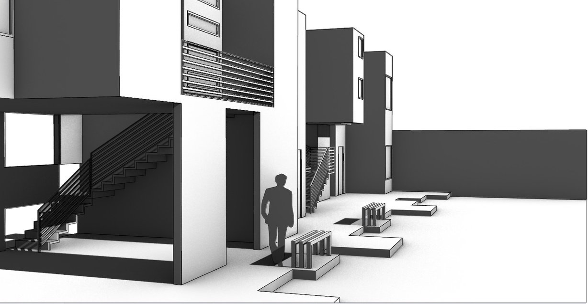
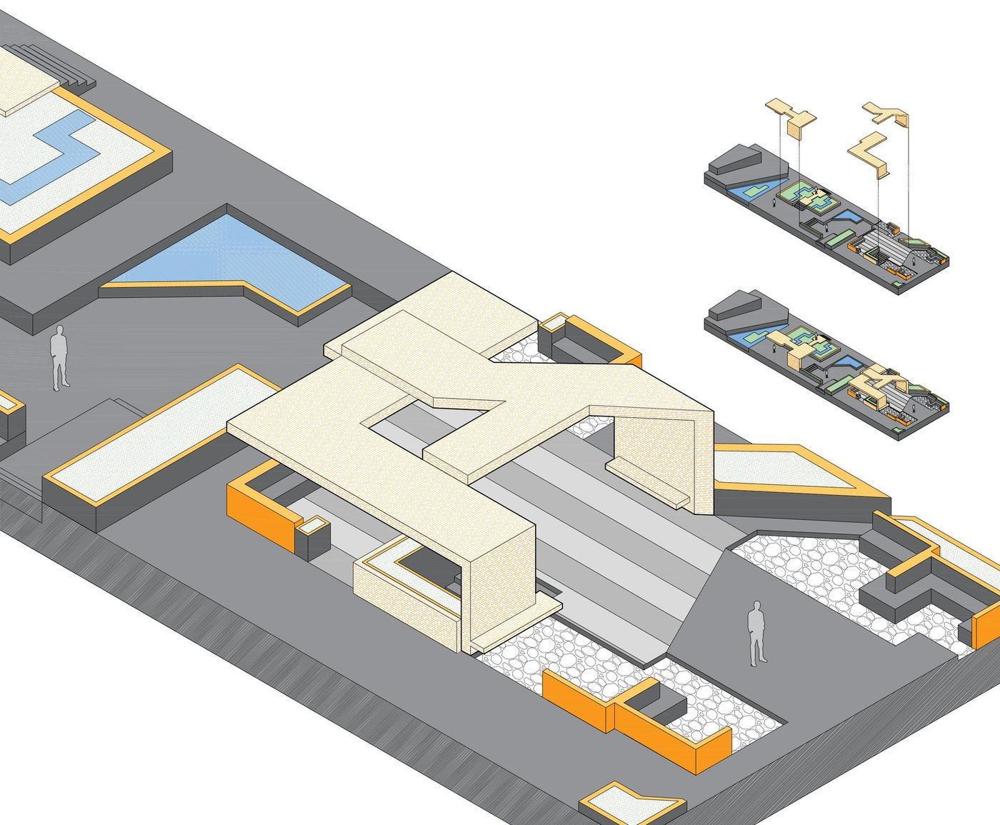
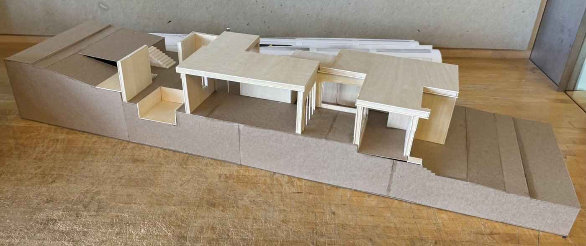
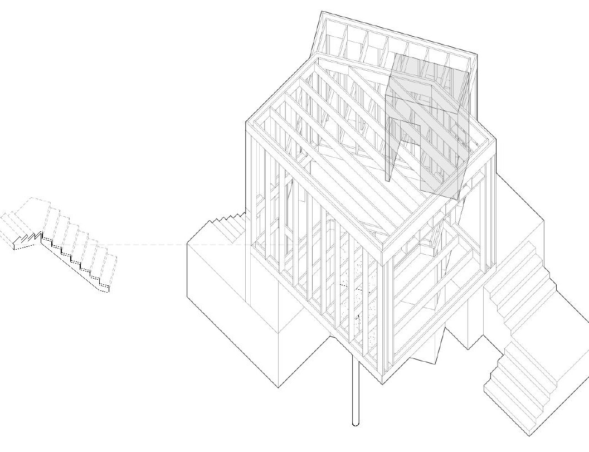

A project management and web development student who started out designing buildings — and now designs the systems and screens that make a user’s experience feel effortless.
I began my degree in FIU’s Master of Architecture – Accelerated Major, spending two years in design studio: structures, digital design, design history, and drawing set after drawing set. It’s where I learned to think in systems — every wall, every load path, every finish has to reconcile with everything else, on a deadline, in front of a critic who will find the part that doesn’t.
In 2026 I moved into an Interdisciplinary Studies B.A. with an expertise focus in Project Management — delivered through FIU’s Information Systems program — and a formal Project Management minor. Same instinct, new medium: instead of construction drawings, I write requirement documents, map entity-relationship diagrams, and build the working prototype myself. What I keep coming back to is process improvement — finding the one bottleneck in a workflow and redesigning around it, whether that’s a hotel’s booking system or a café’s order line. I’m on the Magna Cum Laude track with five Dean’s List terms, and this fall I’m finishing my capstone alongside FIU’s Global Career Accelerator, an applied web-development program.
What I’m looking for next: a technical project management or digital product internship — ideally with a company that builds real, physical guest experiences, like theme parks or hospitality, where I can bring both halves of my background to the table.
Both are team systems-analysis projects, built for fictional companies as coursework, carried from requirements through a working, coded interface. I owned the business case and interface design on one, and led process design and the prototype on the other.
Guest experience booking platform
A resort-owned reservation system replacing a paper clipboard at the pool and a third-party dining platform that had already caused three double-bookings in one quarter. I led the business case and interface design, then built the guest-facing booking flow myself — real-time cabana, chair, and equipment reservations, a dining module, and a loyalty-points checkout that redeems points against a booking total live.
AI-powered order processing redesign
A peak-hour observation of 30 orders at a 24-hour café — a course simulation for a fictional business — surfaced the real bottleneck: a single rework loop at the order-accuracy check, worsened by the 60% of orders that included a customization. I mapped the as-is process, then designed a phased AI rollout — voice ordering first, predictive wait times and a support chatbot later — and built the ordering interface that demonstrates it.
Four studio projects from FIU’s Master of Architecture – Accelerated Major, each carried from a site brief through models, drawings, and final renders.

A new gallery, café, and library building for the Rubell Museum courtyard in Miami, modeled on the geometry and “chopped” fluidity of Madrid’s Royal Collections Gallery.
View in full architectural portfolio — link below
A shaded pavilion for the eastern end of Miami Beach’s Lincoln Road pedestrian mall, with integrated seating, a foot-wash feature, and planters.
View in full architectural portfolio — link below
A patio house on a sloped Miami lot, designed around the work of artist Carmen Herrera — a home for two adults and three children with a studio, gallery, pool, and two gardens.
View in full architectural portfolio — link below
A Florida room inserted between Paul Rudolph’s Hiss Studio and “Umbrella House” residence in Sarasota — a compact studio and bath under a strict height limit.
View in full architectural portfolio — link belowFIU’s applied web-development program, run with Podium Education. Four brand-sponsored builds, Fall 2026 — each one earns a stackable certification.
An interactive game introducing charity: water’s mission to new visitors.
An interactive timeline built for the Web Development track.
A photo gallery showcasing NASA imagery and missions.
A smart skincare routine builder with an AI-powered recommendation flow.
Earned on completion of each track, Aug–Dec 2026, alongside the charity: water, Intel, NASA, and L’Oréal brand projects above.
Composition, sociology, physics with calculus, psychology, and communications credit accepted from five institutions before declaring a major.
Design Studios 1–4, Design Graphics I & II, Design History I & II (Antiquity–Middle Ages, Renaissance–XIX), Materials & Methods of Design, Fundamentals of Digital Design, Structures. Dean’s List: Fall 2023, Spring 2024, Fall 2024.
Moved to Interdisciplinary Studies (B.A.), carrying every architecture credit forward.
Added alongside the Interdisciplinary Studies major.
Business Process Analysis (ISM 3153) and Systems Analysis & Design (ISM 4113) — the two courses behind both case studies above. Dean’s List.
Capstone, Project Management coursework, and a program completed through FIU’s Global Career Accelerator — on track for Magna Cum Laude, expected graduation December 2026.
Open to Spring 2027 internships in technical project management and digital product — especially in guest experience, entertainment, and parks technology.